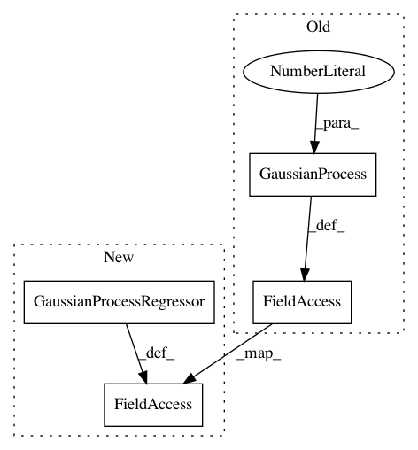

bd6efbca8357c97231e7ae5a18bea309df0aef90,bayes_opt/bayesian_optimization.py,BayesianOptimization,__init__,#BayesianOptimization#Any#Any#Any#,107
Before Change
// broken. However, there is a lot of development going on around GP
// is scikit-learn. So I"ll pick the easy route here and simple specify
// only theta0.
self.gp = GaussianProcess(corr=matern52,
theta0=np.random.uniform(0.001, 0.05, self.dim),
thetaL=1e-5 * np.ones(self.dim),
thetaU=1e0 * np.ones(self.dim),
random_start=30)
// Utility Function placeholder
self.util = None
After Change
self.i = 0
// Internal GP regressor
self.gp = GaussianProcessRegressor(
kernel=Matern(),
n_restarts_optimizer=25,
)
// Utility Function placeholder
self.util = None
In pattern: SUPERPATTERN
Frequency: 3
Non-data size: 4
Instances
Project Name: fmfn/BayesianOptimization
Commit Name: bd6efbca8357c97231e7ae5a18bea309df0aef90
Time: 2016-09-28
Author: fnogueira@Fernandos-MacBook-Pro.local
File Name: bayes_opt/bayesian_optimization.py
Class Name: BayesianOptimization
Method Name: __init__
Project Name: suavecode/SUAVE
Commit Name: 640d91404771e314b7c85fcf1b733182567902df
Time: 2018-09-26
Author: ebotero@stanford.edu
File Name: trunk/SUAVE/Components/Energy/Networks/Propulsor_Surrogate.py
Class Name: Propulsor_Surrogate
Method Name: build_surrogate
Project Name: suavecode/SUAVE
Commit Name: 0bd5632e6a841ec2414d4364bf5665740a107234
Time: 2018-09-26
Author: mclake2@stanford.edu
File Name: trunk/SUAVE/Components/Energy/Networks/Propulsor_Surrogate.py
Class Name: Propulsor_Surrogate
Method Name: build_surrogate